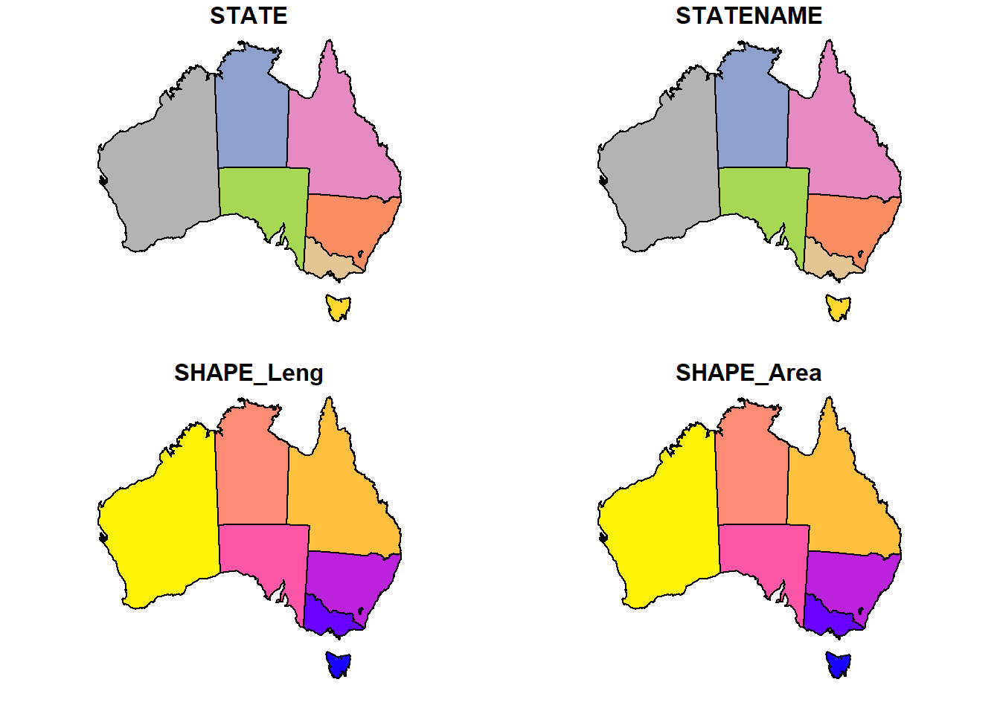

3 Vector Data
3.1 Vector data and features
A feature is thought of as a thing, or an object in the real world, such as a building or a tree. As is the case with objects, they often consist of other objects. This is the case with features too: a set of features can form a single feature. A forest stand can be a feature, a forest can be a feature, a city can be a feature (by Edzer Pebesma).
3.2 Simple features in R
The definition of simple features in wikipedia.
The structure of the data in R is as follow:

We highly recommed reading the simple feature web page.
3.3 sf package
Ths sf package provides simple feature access for R. The sf object is a data.frame with a geometry list-column. It supports different format and spatial references since it is connected to GDAL and PROJ.
3.3.1 Reading and converting data to sf
You can read files directly to sf or convert them from other object types (e.g. data.frame or sp objects).
Now, we can read a polygon map of Australia in shapefile (.shp).
states <- st_read("data/Australia/Australia_proj.shp")
states
plot(states)
# plot only the geometry
plot(st_geometry(states))## Simple feature collection with 8 features and 4 fields
## geometry type: POLYGON
## dimension: XY
## bbox: xmin: -2063975 ymin: -4965263 xmax: 1891143 ymax: -1285856
## epsg (SRID): NA
## proj4string: +proj=lcc +lat_1=-18 +lat_2=-36 +lat_0=0 +lon_0=134 +x_0=0 +y_0=0 +ellps=GRS80 +units=m +no_defs
## STATE STATENAME SHAPE_Leng SHAPE_Area
## 1 9 Western Australia 102.585497 227.4586760
## 2 5 Queensland 78.230893 151.7205320
## 3 6 South Australia 61.940128 91.7623310
## 4 8 Victoria 35.336464 22.9619050
## 5 1 Australian Capital Territory 2.757198 0.2338955
## 6 7 Tasmania 21.742202 7.0119035
## 7 3 New South Wales 52.471221 76.6085725
## 8 4 Northern Territory 67.244892 115.0931295
## geometry
## 1 POLYGON ((-869275 -1649846,...
## 2 POLYGON ((1224467 -1789526,...
## 3 POLYGON ((-494224 -2961045,...
## 4 POLYGON ((643286.2 -3849372...
## 5 POLYGON ((1368783 -4037628,...
## 6 POLYGON ((1166744 -4924361,...
## 7 POLYGON ((1587643 -3346985,...
## 8 POLYGON ((285958.2 -1394759...

Here we want to read koala.csv file into R and convert it to sf object. This file contains longitude and latitude columns that we can use to create sf object.
## Genus Species Longitude Latitude
## 1 Phascolarctos Phascolarctos cinereus 152.7297 -30.18316
## 2 Phascolarctos Phascolarctos cinereus 151.8413 -32.79279
## 3 Phascolarctos Phascolarctos cinereus 152.7621 -30.23195
## 4 Phascolarctos Phascolarctos cinereus 138.7290 -34.94308
## 5 Phascolarctos Phascolarctos cinereus 153.5165 -28.58857
## 6 Phascolarctos Phascolarctos cinereus 153.2155 -27.492843.3.2 Import data from packages
We can use rworldmap package to download the boundary map of the world. This package provides the SpatialPolygonsDataFrame object of the world’s countries. We can convert it to sf. For this purpose we use the dplyr package and its piping functionality to simplify the code!
Remember to load dplyr or tidyverse package.
library(rworldmap)
library(tidyverse)
wmap <- rworldmap::getMap(resolution = "low") %>% # this is SpatialPolygonDataFrame
st_as_sf()
plot(wmap["NAME"])# filter Australia by dplyr
australia <- wmap %>%
filter(NAME == "Australia")
# plot only the geomety of asutalia
plot(australia$geometry, axes = TRUE)We can get the cities of Australia from maps package.
## name country.etc pop lat long capital
## 1 'Abasan al-Jadidah Palestine 5629 31.31 34.34 0
## 2 'Abasan al-Kabirah Palestine 18999 31.32 34.35 0
## 3 'Abdul Hakim Pakistan 47788 30.55 72.11 0
## 4 'Abdullah-as-Salam Kuwait 21817 29.36 47.98 0
## 5 'Abud Palestine 2456 32.03 35.07 0
## 6 'Abwein Palestine 3434 32.03 35.20 0cities <- st_as_sf(world.cities,
coords = c("long",
"lat"),
crs = 4326) %>%
filter(country.etc == "Australia")
plot(cities["pop"])Why they are all the same colour?
3.4 Transform coordinate reference system
Now, we want to put the koala_sf on top of states map to see where koalas occur!
What happend?!
Check the coordinate reference of both maps! Are they the same?
## Coordinate Reference System:
## No EPSG code
## proj4string: "+proj=lcc +lat_1=-18 +lat_2=-36 +lat_0=0 +lon_0=134 +x_0=0 +y_0=0 +ellps=GRS80 +units=m +no_defs"## Coordinate Reference System:
## EPSG: 4326
## proj4string: "+proj=longlat +datum=WGS84 +no_defs"Two map layers should have the same spatial reference to be plotted on the correct location relative to each other. For this, we need to change koala_sf to be the same as states or vice versa.
Notice, the crs argument acsepts the EPSG code as well.
# change the projection
koala_proj <- st_transform(koala_sf,
crs = 3112)
# or
koala_proj <- st_transform(koala_sf,
crs = st_crs(states))
# plot both layers
plot(st_geometry(states),
axes = TRUE)
plot(koala_proj,
col = "blue",
add = TRUE)## Warning in plot.sf(koala_proj, col = "blue", add = TRUE): ignoring all but
## the first attribute3.5 Challenge one
Load the Australia_proj and koala data and plot them on top of each other in Mercator projection (EPSG: 4326). Note: check the spatial reference of the maps first!
Directory of the data:
data/Australia/Australia_proj.shp
data/koala.csv
3.6 Geometric operations
3.6.1 Cropping sf
You can clip the sf object by another sf object or an extent object. The extent object can come from a layer (st_bbox for sf and extent for rasters) or we can draw one by drawExtent function in the raster package. First, you need to plot a map, then run this function. For drawing the extent you should click on two points in the plotted map.
library(raster)
# first plot the map
plot(australia$geometry,
axes = TRUE)
# draw extent manually
ext <- drawExtent()
Now, you can use this object to clip a vector layer.
3.6.2 Buffer and join
In many cases, you need to specify a zone around your map features. We can do this with buffer function in GIS and R. In many GIS software, the distance you specify for your buffers is in the unit of the input features (e.g. degree for the latlong coordinates and meters for Lambert or UTM), with an exception of buffer function in raster package.
Here we use koala_proj object which is in the Lambert coordinate system, so the unit is in metres. The st_buffer is the function we need here.
buf <- st_buffer(koala_proj,
2e5)
plot(st_geometry(states))
plot(st_geometry(koala_proj),
col = "blue",
pch = 16,
cex = 0.5,
add = TRUE)
plot(st_geometry(buf),
border = "red",
add = TRUE)As you see in the plot, for each point in the koala data, a buffer has been created. If the buffer area as a whole is the your purpose and the individual buffers is not important for you, you can use the st_join function to merge all the features in your buffer layer.
3.6.3 Spatial join and intersection
Imagine you want to check how many of your koala points fall in each state. This can be done by st_intersection function. Notice that st_intersects function is a similar function, but it does not return a spatial object. With this function, the attribute of the second layer will be joined to the first layer where they have a spatial intersection. This is also called spatial join in GIS.
## Warning: attribute variables are assumed to be spatially constant
## throughout all geometries##
## Australian Capital Territory New South Wales
## 0 181
## Northern Territory Queensland
## 0 16
## South Australia Tasmania
## 14 0
## Victoria Western Australia
## 31 0There are a lot of other geometric operations and handy functions to check the topologic relationship of simple features in sf package. To see more examples see the sf package vignettes.
3.6.4 Nearest distance
Spatial distance is a very important functionality in spatial analysis. Calculating the distance between features is very easy in GIS. Here we want to calculate the distance between the koala points and Australia coastline.
First, we need to convert the Australia map to line object, then calculate the points to the line. This is because the distance of the points to a polygon that contains them is zero. We can do this by st_cast function.
To calculate the spatial distance of the points to the line, st_distance function is used. This function returns a dense distance matrix that shows the pairwise distance of every single feature in both datasets. The output object would be in units so we can convert it to numeric.
# change polygon to line
aus_line <- st_cast(australia_clip,
"MULTILINESTRING")
# calculate distance and save it in coastdist column
koala_sf$coastdist <- as.numeric(st_distance(koala_sf,
aus_line))
plot(australia_clip$geometry)
plot(koala_sf["coastdist"],
add = TRUE)Here, the distance matrix is a [250 x 1] matrix (250 koala points and 1 line of coastline). In the cases where there are more several features in both layers, you need to calculate the min of each row of the output matrix (e.g. with apply function).
When you want to calculate the nearest distance of every feature in the same layer, you need to repeat the same layer in the st_distance function twice and then calculate the minimum distance. But here is not that easy! Because the nearest distance of every object in the same layer would be itself i.e. the min distance for all of the features would be zero. So, you need to discard the self-distance in the calculating minimum function. You can use the following function to do that. You might be able to find an easier or more efficient way to do that.
## [1] 250 250## Units: [m]
## [,1] [,2] [,3] [,4] [,5]
## [1,] 0.000 298613.7 6173.952 1404940 190336.9
## [2,] 298613.686 0.0 294356.980 1229357 487957.8
## [3,] 6173.952 294357.0 0.000 1405478 194075.2
## [4,] 1404940.357 1229357.4 1405478.023 0 1552826.2
## [5,] 190336.917 487957.8 194075.206 1552826 0.0# function to calculate min distance excluding the self-distance
mindist <- function(x) {
mindis <- vector(mode = "numeric", length = nrow(x))
for(i in seq_len(nrow(x))){
mindis[i] <- min(x[i, -i])
}
return(mindis)
}
# calculate min distance and save it in ndist column
koala_proj$ndist <- mindist(koala_dist)
plot(koala_proj["ndist"])3.7 Write spatial data
To write your spatial vector data in your hard disk, you can use st_write function.
Here we write the koala_proj data to GeoPackage format. GeoPackage is an OGC standard and open format for transferring geospatial information. It is platform-independent, portable, and a compact format.
The old and familiar shapefile format has some drawbacks. For instance:
- It stores in several individual files in hard disk
- Size limitation to 2GB
- Column names are limited to 12 characters
You can read .gpkg format the same way you read .shp files (with st_read function). GeoPackage is supported by GDAL, it means you can read and write them in all (updated) GIS software like QGIS.
3.8 Challenge two
Load the city maps and calculate the nearest straight distance to the coastline of the cities with 0.5 m population and plot the distance. Then save the output layer in GeoPackage.